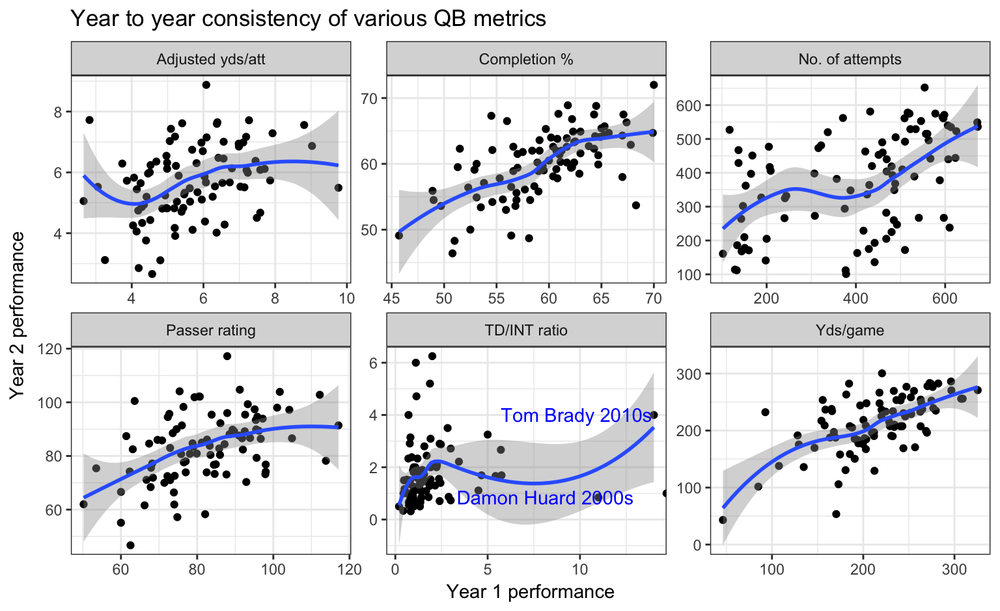
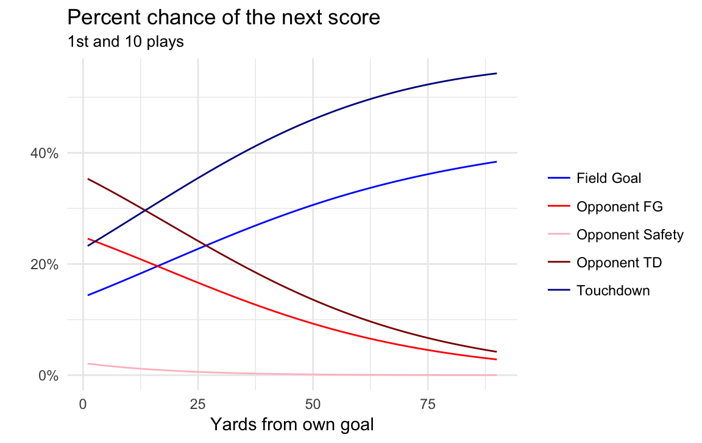

Evolution of the QB

Michael Lopez http://statsbylopez.netlify.com/
Michael Lopez
Michael Lopez http://statsbylopez.netlify.com/

Have QBs improved? Considerations
Have QBs improved? Limitations
What to look for in a metric:
| Metric | Link to team success |
|---|---|
| Adjusted yds/att | High |
| TD/INT ratio | High |
| Yds/game | Medium |
| Passer rating | Medium |
| Completion % | Medium |
| No. of attempts | Low |
Adjusted yds/att = \((passyards + 20*(passTD) - 45*(ints) - sackyards)/(No.attempts + No.sacks)\)
## `geom_smooth()` using method = 'loess' and formula 'y ~ x'## `geom_smooth()` using method = 'loess' and formula 'y ~ x'
| Metric | Link to team success | Repeatability |
|---|---|---|
| Adjusted yds/att | High | Medium |
| TD/INT ratio | High | Low |
| Yds/game | Medium | Medium |
| Passer rating | Medium | Medium |
| Completion % | Medium | High |
| No. of attempts | Low | Medium |
## # weights: 72 (55 variable)
## initial value 410510.011997
## iter 10 value 299802.291361
## iter 20 value 297533.320344
## iter 30 value 285374.562694
## iter 40 value 282710.909188
## iter 50 value 282703.166658
## iter 60 value 282702.597659
## final value 282702.339380
## convergedtab.pass <- A6 %>% ungroup() %>%
filter(type == "PASS", qtr == 1|qtr == 3) %>%
group_by(type, seas) %>%
summarise(med.epa = median(epa, na.rm = TRUE)) %>%
ungroup() %>%
select(-type) %>% rename(Season = seas, `Median EPA` = med.epa)
tab.rush <- A6 %>% ungroup() %>%
filter(type == "RUSH", qtr == 1|qtr == 3) %>%
group_by(type, seas) %>%
summarise(med.epa = median(epa, na.rm = TRUE)) %>%
ungroup() %>%
select(-type) %>% rename(Season = seas, `Median EPA` = med.epa)
############################################
############################################
############################################
passes <- inner_join(A1, pass)## Joining, by = "pid"passes <- passes %>% filter(loc %in% c("DL", "DM", "DR", "SL", "SM", "SR"))
p1comp <- passes %>% group_by(loc, seas) %>%
summarise(comp.rate = mean(comp)) %>%
mutate(x.loc = case_when(loc == "DL"|loc == "SL" ~ "Left",
loc == "DM"|loc == "SM" ~ "Middle",
loc == "DR"|loc == "SR" ~ "Right"),
y.loc = ifelse(loc %in% c("DL", "DR", "DM"), "1.deep", "2.short")) %>%
filter(y.loc == "1.deep") %>%
ggplot(aes(factor(seas), comp.rate)) +
geom_point() + geom_smooth(span = 0.9) +
scale_y_continuous(labels = scales::percent, "") +
scale_x_discrete("Season") +
theme_minimal() +
theme(axis.text.x = element_text(angle = 45, vjust = 0.5)) +
labs(title = "Completion rate by season", subtitle = "Deep passes") +
facet_wrap(~x.loc, scales = "free_y", nrow = 1)
p2comp <- passes %>% group_by(loc, seas) %>%
summarise(comp.rate = mean(comp)) %>%
mutate(x.loc = case_when(loc == "DL"|loc == "SL" ~ "Left",
loc == "DM"|loc == "SM" ~ "Middle",
loc == "DR"|loc == "SR" ~ "Right"),
y.loc = ifelse(loc %in% c("DL", "DR", "DM"), "1.deep", "2.short")) %>%
filter(y.loc == "2.short") %>%
ggplot(aes(factor(seas), comp.rate)) +
geom_point() + geom_smooth(span = 0.9) +
scale_y_continuous(labels = scales::percent, "") +
scale_x_discrete("Season") +
theme_minimal() +
theme(axis.text.x = element_text(angle = 45, vjust = 0.5)) +
labs(subtitle = "Short passes") +
facet_wrap(~x.loc, scales = "free_y", nrow = 1)
p1comp + p2comp + plot_layout(ncol = 1)## `geom_smooth()` using method = 'loess' and formula 'y ~ x'## `geom_smooth()` using method = 'loess' and formula 'y ~ x'exp.bw
p.probs
kable(tab.pass)| Season | Median EPA |
|---|---|
| 2002 | 0.6790508 |
| 2003 | 0.6411583 |
| 2004 | 0.7379042 |
| 2005 | 0.7090398 |
| 2006 | 0.6892838 |
| 2007 | 0.7235163 |
| 2008 | 0.7267239 |
| 2009 | 0.7272115 |
| 2010 | 0.7199877 |
| 2011 | 0.7522421 |
| 2012 | 0.7617044 |
| 2013 | 0.7199714 |
| 2014 | 0.7546562 |
| 2015 | 0.7789599 |
| 2016 | 0.7537097 |
| 2017 | 0.7417551 |
kable(tab.rush)| Season | Median EPA |
|---|---|
| 2002 | 0.5744462 |
| 2003 | 0.5621996 |
| 2004 | 0.5265997 |
| 2005 | 0.5296278 |
| 2006 | 0.5444225 |
| 2007 | 0.5648355 |
| 2008 | 0.5777760 |
| 2009 | 0.5480267 |
| 2010 | 0.5599012 |
| 2011 | 0.6170216 |
| 2012 | 0.6389082 |
| 2013 | 0.6233210 |
| 2014 | 0.6526372 |
| 2015 | 0.6469201 |
| 2016 | 0.6465261 |
| 2017 | 0.6312732 |